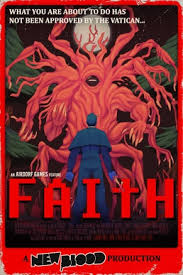
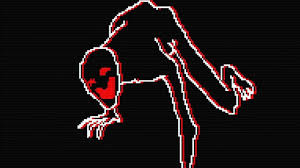
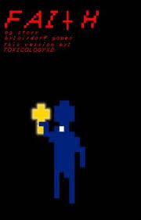

FTUT is a survival horror game portrayed in 8-bit style visuals and, on the surface, tells the story of a priest hunting down demons in Snake Meadow Hill Road, and coming across a cult in the process. However, the more you play, you realize that John is more connected to this cult than we initially thought, and maybe he might not be cut out for being a harbinger of God’s power…
The game is separated into three chapters, all released individually at first, titled Faith: Chapter 1, Chapter 2, and Chapter 3. before being combined into one whole game titled Faith: The Unholy Trinity.
The game’s mechanics are deceivingly simple: WASD to move, and SPACE to hold up your cross (note: there are moments where the cross is replaced with other items, but they are temporary and less of a way to deal with enemies). Using the cross freezes the player in place, but it deals intense damage to demonic entities coming after John until they either die or run away. Again, the graphics are purely 8-bit, resembling that of an old 80’s arcade game with how it looks and plays this is even fitting with the timeline. It is confirmed that the events of the game - unless said otherwise - all take place in the 80s).
However, the cutscenes are what has made this game particularly notable and recognizable in the world of indie horror games. The characters are still drawn in pixels, but in cutscenes have far more detail in their zoomed in versions, and the move unsettlingly smoothly. The cleaners of the animation does not resemble games from the 80’s in that way, and it gives these cutscenes a jarring and off-putting feel. This is because the original creator of the game, who goes by Airdorf, used a style of animation known as rotoscoping. Essentially, he would video himself performing the action or motion he wanted the character to portray, and then traced over the video footage in the pixel medium with the characters he wanted in the scene. This way, the movement is smooth and overly realistic, giving the feeling I mentioned above.
If you want to know more about this game - specifically, chapters 1 and 2, I will be going over them in this website
